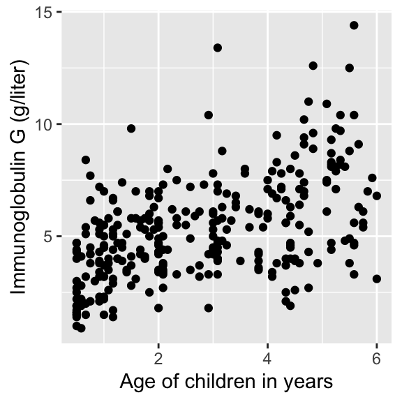
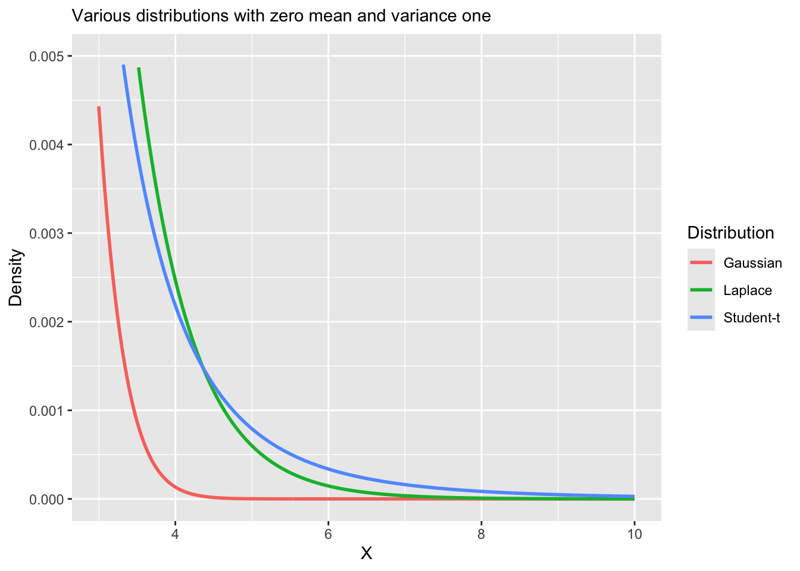
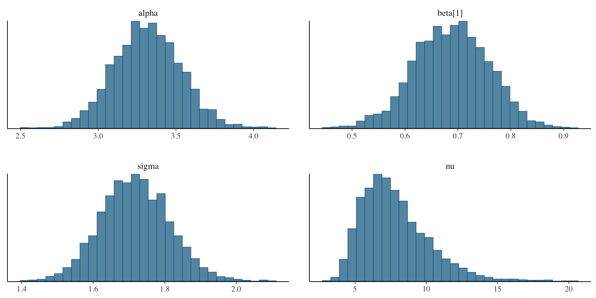
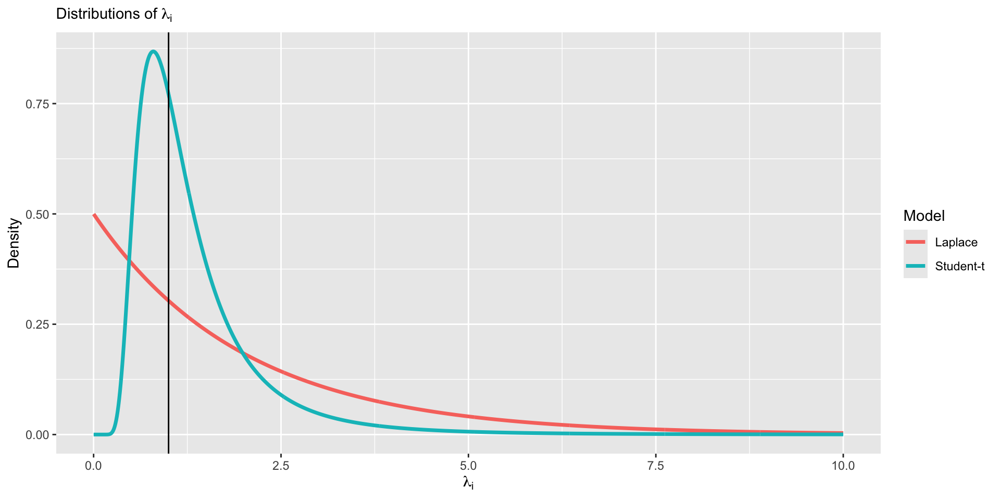

library(Brq)
data("ImmunogG")
head(ImmunogG) IgG Age
1 1.5 0.5
2 2.7 0.5
3 1.9 0.5
4 4.0 0.5
5 1.9 0.5
6 4.4 0.5On Thursday, we started to branch out from linear regression.
We learned about approaches for nonlinear regression.
Today we will address approaches for robust regression, which will generalize the assumption of homoskedasticity (and also the normality assumption).
In today’s lecture, we will look at data on serum concentration (grams per litre) of immunoglobulin-G (IgG) in 298 children aged from 6 months to 6 years.
For an example patient, we define \(Y_i\) as the serum concentration value and \(X_i\) as a child’s age, given in years.
library(Brq)
data("ImmunogG")
head(ImmunogG) IgG Age
1 1.5 0.5
2 2.7 0.5
3 1.9 0.5
4 4.0 0.5
5 1.9 0.5
6 4.4 0.5


\[Y_i = \alpha + \beta X_i + \epsilon_i,\quad \epsilon_i \sim N(0,\sigma^2).\]
\[\begin{aligned} Y_i &= \alpha + \beta X_i + \epsilon_i,\quad \epsilon_i \sim N(0,\sigma^2)\\ &= \mu_i + \epsilon_i. \end{aligned}\]
Assumptions:
\(Y_i\) are independent observations (independence).
\(Y_i\) is linearly related to \(X_i\) (linearity).
\(\epsilon_i = Y_i - \mu_i\) is normally distributed (normality).
\(\epsilon_i\) has constant variance across \(X_i\) (homoskedasticity).


Today we will learn about regression techniques that are robust to the assumptions of linear regression.
We will introduce the idea of robust regression by exploring ways to generalize the homoskedastic variance assumption in linear regression.
We will touch on heteroskedasticity, heavy-tailed distributions, and median regression (more generally quantile regression).
Despite their desirable properties, robust methods are not widely used. Why?
Historically computationally complex.
Not available in statistical software packages.
Bayesian modeling using Stan alleviates these bottlenecks!
Heteroskedasticity is the violation of the assumption of constant variance.
How can we handle this?
In OLS, there are approaches like heteroskedastic consistent errors, but this is not a generative model.
In the Bayesian framework, we generally like to write down generative models.
One option is to allow the sale to be modeled as a function of covariates.
It is common to model the log-transformation of the scale or variance to transform it to \(\mathbb{R}\),
\[\log \tau_i = \mathbf{z}_i \boldsymbol{\gamma},\]
where \(\mathbf{z}_i = (z_{i1},\ldots,z_{ip})\) are a \(p\)-dimensional vector of covariates and \(\boldsymbol{\gamma}\) are parameters that regress the covariates onto the log standard deviation.
Other options include: \(\log \tau_i = \mathbf{z}_i \boldsymbol{\gamma} + \nu_i,\quad \nu_i \sim N(0, \sigma^2)\)
Other options include: \(\log \tau_i = f(\mu_i)\)
Any plausible generative model can be specified!
data {
int<lower = 1> n;
int<lower = 1> p;
int<lower = 1> q;
vector[n] Y;
matrix[n, p] X;
matrix[n, q] Z;
}
parameters {
real alpha;
vector[p] beta;
vector[q] gamma;
}
transformed parameters {
vector[n] tau = exp(Z * gamma);
}
model {
target += normal_lpdf(Y | alpha + X * beta, tau);
}We can write the regression model using a observation specific variance, \[Y_i = \alpha + \mathbf{x}_i \boldsymbol{\beta} + \epsilon_i, \quad \epsilon_i \stackrel{ind}{\sim} N(0,\tau_i^2).\]
One way of writing the variance is: \(\tau_i^2 = \sigma^2 \lambda_i\).
\(\sigma^2\) is a global scale parameter.
\(\lambda_i\) is an observation specific scale parameter.
In the Bayesian framework, we must place a prior on \(\lambda_i\).
\[\lambda_i \stackrel{iid}{\sim} \text{Inverse-Gamma}\left(\frac{\nu}{2},\frac{\nu}{2}\right).\]

\[\lambda_i \stackrel{iid}{\sim} \text{Inverse-Gamma}\left(\frac{\nu}{2},\frac{\nu}{2}\right).\]
\[Y_i = \alpha + \mathbf{x}_i \boldsymbol{\beta} + \epsilon_i, \quad \epsilon_i \stackrel{iid}{\sim} t_{\nu}\left(0, \sigma\right).\]
\[Y_i = \alpha + \mathbf{x}_i \boldsymbol{\beta} + \epsilon_i, \quad \epsilon_i \stackrel{iid}{\sim} t_{\nu}\left(0, \sigma\right).\]
\[\iff\]
\[\begin{aligned} Y_i &= \alpha + \mathbf{x}_i \boldsymbol{\beta} + \epsilon_i, \quad \epsilon_i \stackrel{ind}{\sim} N\left(0,\sigma^2 \lambda_i\right)\\ \lambda_i &\stackrel{iid}{\sim} \text{Inverse-Gamma}\left(\frac{\nu}{2},\frac{\nu}{2}\right) \end{aligned}\]
\[\begin{aligned} f(Y_i) &= \int_0^{\infty} f(Y_i , \lambda_i) d\lambda_i\\ &= \int_0^{\infty} f(Y_i | \lambda_i) f(\lambda_i) d\lambda_i\\ &= \int_0^{\infty} N(Y_i ; \mu_i, \sigma^2 \lambda_i) \text{Inverse-Gamma}\left(\lambda_i ; \frac{\nu}{2},\frac{\nu}{2}\right) d\lambda_i\\ &= t_{\nu}\left(\mu_i,\sigma\right). \end{aligned}\]
A random variable \(T_i \stackrel{iid}{\sim} t_{\nu}\) can be written as a function of Gaussian and \(\chi^2\) random variables, \[\begin{aligned} T_i &= \frac{Z_i}{\sqrt{\frac{W_i}{\nu}}},\quad Z_i \stackrel{iid}{\sim} N(0,1), \quad W_i \stackrel{iid}{\sim}\chi^2_{\nu}\\ &= \frac{Z_i}{\sqrt{\frac{1}{\nu V_i}}},\quad V_i \stackrel{iid}{\sim} \text{Inv-}\chi^2_{\nu},\quad V_i=W_i^{-1}\\ &= \sqrt{\nu V_i} Z_i,\quad \lambda_i = \nu V_i\\ &= \sqrt{\lambda_i} Z_i, \quad \lambda_i \stackrel{iid}{\sim} \text{Inverse-Gamma}\left(\frac{\nu}{2},\frac{\nu}{2}\right). \end{aligned}\]
data {
int<lower = 1> n;
int<lower = 1> p;
vector[n] Y;
matrix[n, p] X;
}
parameters {
real alpha;
vector[p] beta;
real<lower = 0> sigma;
real<lower = 0> nu;
}
model {
target += student_t_lpdf(Y | nu, alpha + X * beta, sigma);
}data {
int<lower = 1> n;
int<lower = 1> p;
vector[n] Y;
matrix[n, p] X;
}
parameters {
real alpha;
vector[p] beta;
real<lower = 0> sigma;
vector[n] lambda;
real<lower = 0> nu;
}
transformed parameters {
vector[n] tau = sigma * sqrt(lambda);
}
model {
target += normal_lpdf(Y | alpha + X * beta, tau);
target += inv_gamma_lpdf(lambda | 0.5 * nu, 0.5 * nu);
}Replacing the normal distribution with a distribution with heavy-tails (e.g., Student-t, Laplace) is a common approach to robust regression.
Robust regression refers to regression methods which are less sensitive to outliers or small sample sizes.
Linear regression, including Bayesian regression with normally distributed errors is sensitive to outliers, because the normal distribution has narrow tail probabilities.
Our heteroskedastic model that we just explored is only one example of a robust regression model.



Let’s revisit our general heteroskedastic regression, \[Y_i = \alpha + \mathbf{x}_i \boldsymbol{\beta} + \epsilon_i, \quad \epsilon_i \stackrel{ind}{\sim} N(0,\sigma^2 \lambda_i).\]
We can induce another form of robust regression using the following prior for \(\lambda_i\), \(\lambda_i \sim \text{Exponential}(1/2)\).

Let’s revisit our general heteroskedastic regression, \[Y_i = \alpha + \mathbf{x}_i \boldsymbol{\beta} + \epsilon_i, \quad \epsilon_i \stackrel{ind}{\sim} N(0,\sigma^2 \lambda_i).\]
We can induce another form of robust regression using the following prior for \(\lambda_i\), \(\lambda_i \sim \text{Exponential}(1/2)\).
Under this prior, the induced marginal model is, \[Y_i = \alpha + \mathbf{x}_i\boldsymbol{\beta} + \epsilon_i,\quad \epsilon_i \stackrel{iid}{\sim} \text{Laplace}(\mu = 0, \sigma).\]
This has a really nice interpretation!
Suppse a variable \(Y_i\) follows a Laplace (or double exponential) distribution, then the pdf is given by,
\[f(Y_i | \mu, \sigma) = \frac{1}{2\sigma} \exp\left\{-\frac{|Y_i - \mu|}{\sigma}\right\}\]
\(\mathbb{E}[Y_i] = \mu\)
\(\mathbb{V}(Y_i) = 2 \sigma^2\)
Under the Laplace likelihood, estimation of \(\mu\) is equivalent to estimating the population median of \(Y_i\).
Least absolute deviation (LAD) regression minimizes the following objective function,
\[\hat{{\alpha}}_{\text{LAD}},\hat{\boldsymbol{\beta}}_{\text{LAD}} = \arg \min_{\alpha,\boldsymbol{\beta}} \sum_{i=1}^n |Y_i - \mu_i|, \quad \mu_i = \alpha + \mathbf{x}_i\boldsymbol{\beta}.\]
The Bayesian analog is the Laplace distribution,
\[f(\mathbf{Y} | \alpha, \boldsymbol{\beta}, \sigma) = \left(\frac{1}{2\sigma}\right)^n \exp\left\{-\sum_{i=1}^n\frac{|Y_i - \mu_i|}{\sigma}\right\}.\]
The Laplace distribution is analogous to least absolute deviations because the kernel of the distribution is \(|x−\mu|\), so minimizing the likelihood will also minimize the least absolute distances.
Laplace distribution is also known as the double-exponential distribution (symmetric exponential distributions around \(\mu\) with scale \(\sigma\)).
Thus, a linear regression with Laplace errors is analogous to a median regression,
Why is median regression considered more robust than regression of the mean?
data {
int<lower = 1> n;
int<lower = 1> p;
vector[n] Y;
matrix[n, p] X;
}
parameters {
real alpha;
vector[p] beta;
real<lower = 0> sigma;
}
model {
target += double_exponential_lpdf(Y | alpha + X * beta, sigma);
}data {
int<lower = 1> n;
int<lower = 1> p;
vector[n] Y;
matrix[n, p] X;
}
parameters {
real alpha;
vector[p] beta;
real<lower = 0> sigma;
vector[n] lambda;
}
transformed parameters {
vector[n] tau = sigma * sqrt(lambda);
}
model {
target += normal_lpdf(Y | alpha + X * beta, tau);
target += exponential_lpdf(lambda | 0.5);
}
| Model | Mean | Lower | Upper |
|---|---|---|---|
| Laplace | 0.73 | 0.56 | 0.89 |
| Student-t | 0.69 | 0.55 | 0.82 |
| Gaussian | 0.69 | 0.56 | 0.83 |
| Gaussian with Covariates in Variance | 0.76 | 0.62 | 0.89 |
| elpd_diff | elpd_loo | looic | |
|---|---|---|---|
| Student-t | 0.00 | -624.42 | 1248.84 |
| Gaussian | -2.01 | -626.43 | 1252.86 |
| Gaussian with Covariates in Variance | -6.09 | -630.51 | 1261.02 |
| Laplace | -13.10 | -637.52 | 1275.05 |
Inference for Stan model: anon_model.
4 chains, each with iter=2000; warmup=1000; thin=1;
post-warmup draws per chain=1000, total post-warmup draws=4000.
mean se_mean sd 2.5% 97.5% n_eff Rhat
alpha 3.32 0.00 0.21 2.91 3.74 2084 1
beta[1] 0.69 0.00 0.07 0.55 0.82 2122 1
sigma 1.72 0.00 0.10 1.53 1.91 2744 1
nu 7.80 0.05 2.35 4.40 13.29 2617 1
Samples were drawn using NUTS(diag_e) at Sun Feb 9 14:54:53 2025.
For each parameter, n_eff is a crude measure of effective sample size,
and Rhat is the potential scale reduction factor on split chains (at
convergence, Rhat=1).

Robust regression techniques can be used when the assumptions of constant variance and/or normality of the residuals do not hold.
Heteroskedastic variance can viewed as inducing extreme value distributions.
Extreme value regression using Student-t and Laplace distributions are robust to outliers.
Laplace regression is equivalent to median regression.
Work on HW 02, which is due before next class.
Complete reading to prepare for next Thursday’s lecture
Thursday’s lecture: Regularization